新增倉庫
1. 快速上手
注意：
目前，儘管本專案相關倉庫已經搭建完成，但是絕大多數軟體包仍處於未完成狀態。
之後，本專案的相關包名將可能會被命名為 tmoe-2021, tmm 和 tmoe
1.1. apt
1.1.1. debian

- 系統要求
- 支援
- Debian GNU/Linux
- 目前支援的最低版本為 Debian 9 Stretch
- 由於 Stretch 已經 EOL, 之後最低版本可能會升級至 Buster
- Debian GNU/Linux
- 不支援
- Debian GNU/Hurd 和 kFreeBSD
- 支援
su -c "apt update; apt install doas curl"
su -c "echo 'permit nopass $(id -un) cmd apt' >> /etc/doas.conf"
curl -LO https://l.tmoe.me/neko.deb
doas apt install ./neko.deb
rm -v neko.deb
doas apt update
doas apt install toy-repo
在題外話中，本專案開發者將介紹：為什麼是 OpenBSD
doas而非sudo
1.1.2. ubuntu

sudo apt update
sudo apt install -y wget
wget l.tmoe.me/neko.deb
sudo apt install ./neko.deb
rm -v neko.deb
sudo apt update
sudo apt install uuu-repo
1.1.3. termux
File: termux.svg
License: CC BY-SA 4.0
Origin: Termux.com - https://termux.com/
curl -LO l.tmoe.me/tinor.deb
apt install ./tinor.deb
apt update
1.2. pacman

開發者還在咕咕咕中 ...
2. Debian-based (ubuntu, mint, kali)
從理論上說，您不應該混用 debian 和 ubuntu 的軟體源。
因為這會破壞系統的依賴關係。
您如果之前一直都是這麼幹的，那麼需要多瞭解一下 debian。
您可以閱讀 debian 參考手冊（Osamu Aoki 青木修 著）。
2.1. 通用
那麼問題來了。
既然混用源的問題這麼嚴重，那為什麼本專案還是有通用倉庫呢？
答案是：
- 靜態編譯
- 低版本依賴
- 以及 "all" 架構的軟體包。
實際上，對於不能通用的包來說，開發者會為它們建立單獨的倉庫。
對於 debian-based 發行版來說，本專案通用的倉庫名為 "neko"。
2.1.1. 詳細說明
-
要求：
- 系統版本： debian 9 (stretch) & ubuntu 16.04(xenial)
- 依賴:
apt-transport-https,ca-certificates
- 依賴:
- 系統版本：debian 10 (buster), ubuntu 18.04 (bionic) 及其以上的系統
- 依賴:
ca-certificates
- 依賴:
- 系統版本： debian 9 (stretch) & ubuntu 16.04(xenial)
以下例子將使用 curl
您也可以換用其他下載工具，例如 wget2 或 aria2
以下內容可以直接編輯
apt update
apt install -y curl
# 下載並安裝 tmoe 的 neko 倉庫
curl -LO https://l.tmoe.me/neko.deb
apt install ./neko.deb
# 這個 deb 包對您的系統做了什麼呢？
# 在 /etc/apt/sources.list.d/ 目錄下建立了源列表：
# neko-repo.sources (許可權為644,所屬為0:0)
# 在本書的換源部分將介紹這種格式
# 還有 OpenPGP(GnuPG) 公鑰：
# /usr/share/keyrings/tmoe-archive-keyring.gpg (許可權同上)
# 並且在 /etc/apt/preferences.d/50-neko-repository 中調整了軟體包優先順序
# 注：此 deb 包不依賴 gnupg(完整版)， 只需要 apt 自身依賴的 gpgv(簡化版gnupg) 就可以了
# 刪除 deb 包
rm -fv ./neko.deb
# 更新索引資訊
apt update
2.1.2. neko-repo 詳情
apt show neko-repo
Package: neko-repo
Version: 0.0.1-12
Priority: standard
Section: misc
Maintainer: Moe Master <m@tmoe.me>
Installed-Size: 30.7 kB
Provides: set-src-list, update-neko-key
Depends: apt (>= 1.1.0)
Recommends: ca-certificates
Suggests: curl | wget
Homepage: https://packages.tmoe.me/deb/dists/neko/
Download-Size: 5,232 B
APT-Manual-Installed: yes
APT-Sources: https://packages.tmoe.me/deb neko/main amd64 Packages
Description: Neko repository, QwQ
It includes some useful packages.
The minimum supported version of this repository is debian 9 (Stretch),
you should not install it on debian 8 (Jessie).
讓我們來看一下 neko-repo 提供了什麼東西
set-src-list- 我們將會在“倉庫/更換映象源”中介紹到它
update-neko-key- 用於更新公鑰
2.1.3. 更新公鑰
在極其特殊的情況下，neko 倉庫的 OpenPGP 公鑰可能會失效。
在這種情況下，您就不能用 apt-get install 來更新 neko 倉庫的 keyring 了，而要用 neko-repo 自帶的一個命令。
執行
update-neko-key
它會輸出以下內容
It can update the OpenPGP pub keyring: "/usr/share/keyrings/tmoe-archive-keyring.gpg"
-d | --downloader: You can specify the downloader.
For example, you can run "update-neko-key -d curl" to use curl.
Run "update-neko-key -d wget" to use wget.
簡單來說，您需要手動指定一個下載器。
現在只支援
curlwgetwget2aria2c
用法很簡單，以 root 身份執行 update-neko-key -d curl。
如果沒有 root 許可權，那麼它將無法修改 "/usr/share/keyrings/tmoe-archive-keyring.gpg"。
這個工具的邏輯非常簡單。
- 若您的系統已經安裝了
gnupg，那麼它將從相關倉庫獲取 ascii 格式的 OpenPGP 公鑰，並將其轉換為二進位制格式，最後覆蓋原來的公鑰。 - 若您的系統沒有安裝
gnupg, 或者轉換過程出錯了，那麼它將直接從相關網站獲取二進位制格式的公鑰。
如果沒有意外的話，您可能十年都不需要呼叫此命令去更新公鑰。
至於開發者能不能為本專案用愛發電十年就是另一回事了。
2.2. toy-repo
與 neko-repo 不同，toy-repo 並非完全通用的。 它只能給 debian 用，不能給 ubuntu 用。
2.2.1. 詳情
apt show toy-repo
Package: toy-repo
Version: 0.0.1-4
Priority: optional
Section: misc
Maintainer: Moe Master <m@tmoe.me>
Installed-Size: 19.5 kB
Depends: apt (>= 1.1.0), neko-repo
Suggests: ca-certificates
Homepage: https://packages.tmoe.me/deb/dists/toy
Download-Size: 2,484 B
APT-Manual-Installed: yes
APT-Sources: https://packages.tmoe.me/deb neko/main amd64 Packages
Description: A repository for debian only
Toy is a wonderful thing.
Let's keep our childishness and optimism!
Go after the good things in the toy-repo!
The source file will be placed in "/etc/apt/sources.list.d/toy-repo.sources"
遺憾的是，toy-repo(玩具倉庫)自身並沒有什麼有用的東西。
有用的東西都在倉庫裡面，您需要以 root 身份執行 apt install 來安裝您心儀的玩具。
玩具是一個很美好的東西，開發者將其命名為 toy，並沒有抱著做“玩具專案” 這種消極的想法。
與 debian 的 玩具總動員系列的代號類似。
保持童真，以及積極向上的態度是非常重要的。
toy 這個詞還包含了開發者對美好生活的嚮往。
這個世界是非常複雜的，像孩童一樣追求著簡簡單單的快樂是一件非常非常幸福的事情。
2.3. uuu-repo
與 neko-repo 和 toy-repo 都不同。
uuu 倉庫只能給 ubuntu 用，不能給 debian 用。
2.3.1. 說明
uuu 倉庫對於 ubuntu 來說是通用的。
本專案之後可能還會有 "focal-repo" 這種只能給單獨的版本使用的倉庫。
3. Android
3.1. termux
3.1.1. tinor
TINOR Is Not Official Repository.
把軟體包拆出來，看看裡面有什麼東西吧！
├── control
│ ├── conffiles
│ ├── control
│ ├── md5sums
│ ├── postinst
│ └── postrm
└── data
└── data
└── data
└── com.termux
└── files
└── usr
├── bin
│ ├── set-src-list
│ └── update-tinor-key
├── etc
│ └── tmoe
│ └── repo
│ └── apt
│ ├── preferences.d
│ │ └── 50-tinor
│ └── sources.list.d
│ └── tinor.sources
└── share
├── doc
│ └── tinor-repo
│ ├── changelog.Debian
│ └── copyright
└── keyrings
└── tmoe-archive-keyring.gpg
在安裝 deb 包，執行 postinst 的 configure 階段時， postinst 會在 $PREFIX/etc/apt/sources.list.d 和 $PREFIX/etc/apt/preferences.d 處建立與 tinor 相關的軟連結；
解除安裝軟體包，執行 postrm 的 purge 或 remove 階段時，postrm 會自動刪掉軟連結。
可以看出來，它的結構與 neko-repo 是極其相似的，只是路徑不一樣。
4. 題外話
4.1. 您可能不需要了解的知識

如果您一定要混用軟體源, 那麼請在高版本系統中使用低版本系統的源。
否則將出現以下的情況：
比如系統 A 的 glibc 版本是 2.33，B 是 2.35。
B 的某個軟體 b 依賴了 glibc。
如果您在 A 上用了 B 的源，然後又安裝了 b ，那麼 glibc 可能也被升到了 2.35。
這時候 A 上一大堆系統相關軟體要麼跟著升級，要麼可能會出現不可預料的“不穩定性”。
如果您想要將一個系統完全變成另一個系統的模樣，那麼結論與上面完全相反，您得要像上面那張流程圖那樣做才行。
這樣做相當於從低版本系統升級到高版本。
比如說您想要將 debian 更換為 kali 源，這時候應該用低版本的 debian stable 新增高版本的 kali rolling 源，而不能用高版本的 debian sid 來新增低版本 kali rolling 源。
這裡的高低是相對而言的。
在使用完 apt dist-upgrade 更新完所有軟體包後，您的系統的內部就已經變成 kali 的形狀了。
在沒有快照或備份的情況下，這麼做就已經回不了頭了。
4.2. doas 與 sudo
Q: 為什麼是 doas， 而非 sudo?
A: 截至 2022-06-20，相較於 sudo, doas 的程式碼量更少，出現安全漏洞的頻率也更低。
從客觀的角度來看：因為用的人少，所以安全漏洞被揭露的可能性更低。
從 2moe 個人（主觀）的角度來看：OpenBSD 那邊對安全問題可能會更走心一點。
The doas tool was originally written for OpenBSD by Ted Unangst.